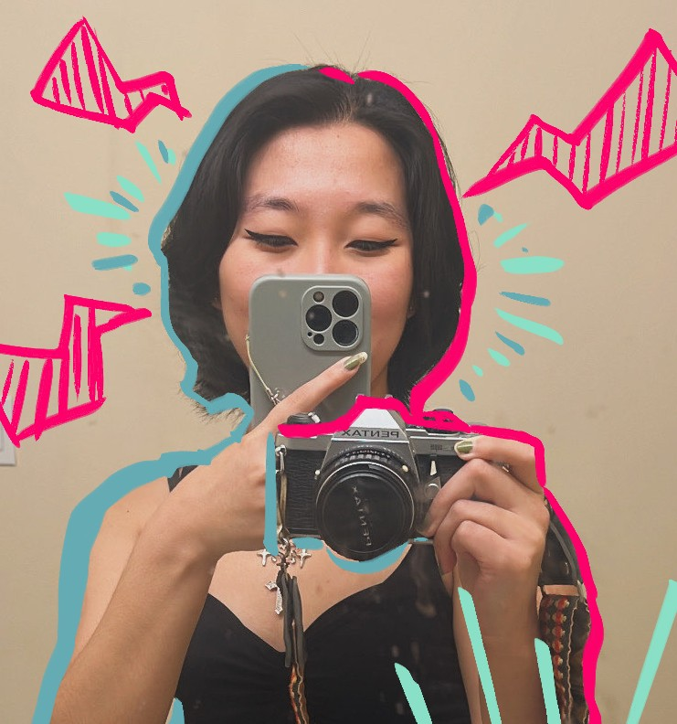
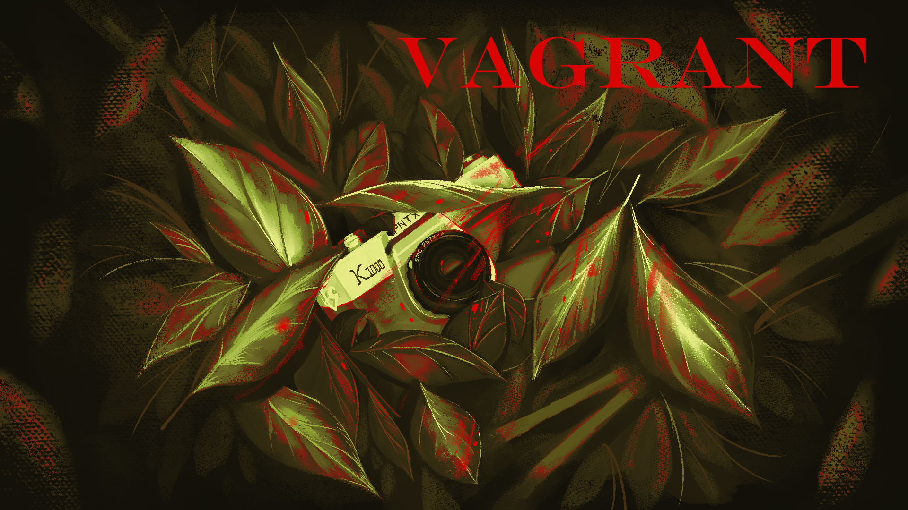
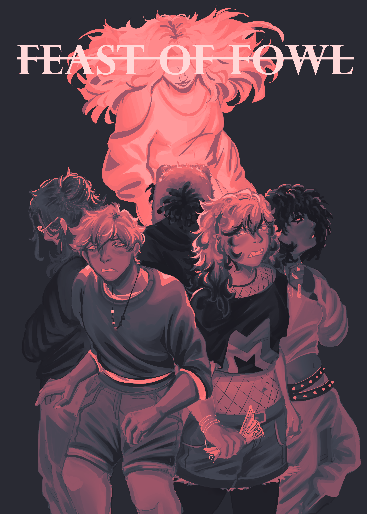
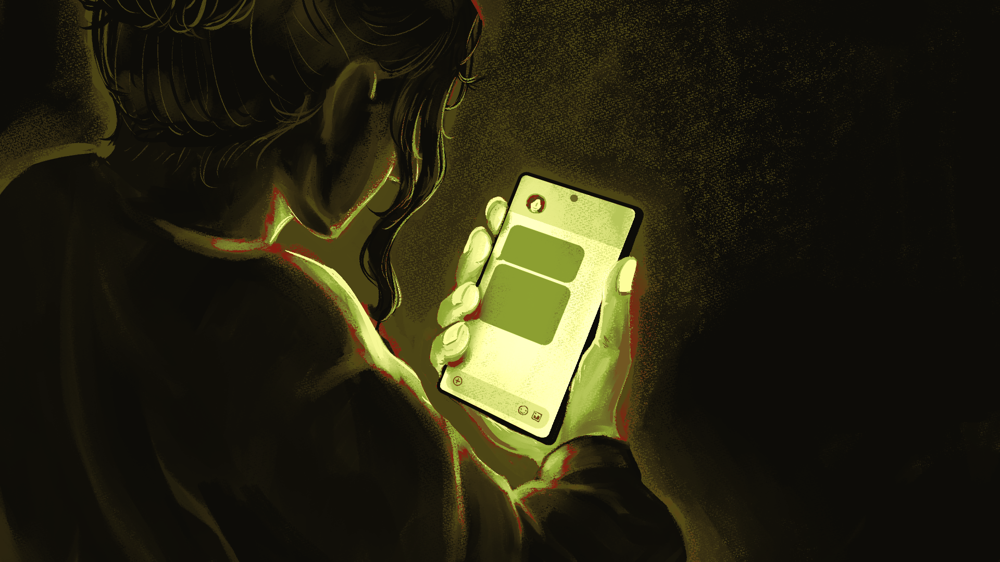
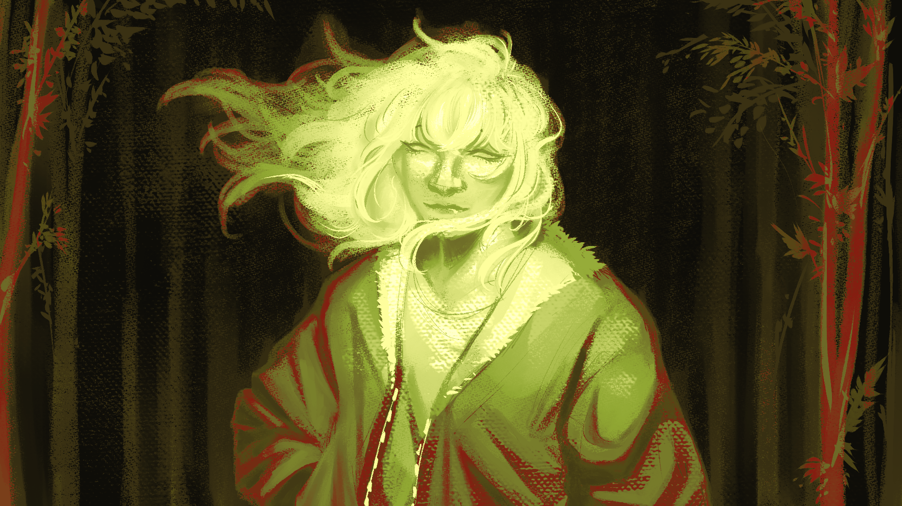

QUINN LEE
( SHE/HER )
Instagram: @_quinnary
TikTok: @_quinnary
About the Artist
Quinn Lee is an artist attending San Jose State University as a Digital Media Art major, with a focus in combining her illustrative works with creative coding. Inspired by video games and analog technology, Quinn's creative coding work focuses on utilizing direct interactions with her stories that allows readers to become immersed in her narrative storytelling rather than being passive observers to it. She takes pride in getting her audience to feel raw and authentic emotions, as though they are reviewing a reflection of their own lives through the screen. Evoking such emotion provides a meaning to her creations, as well as a purpose for art itself to continue to thrive, which she strongly believes in upholding.
VAGRANT
Originally residing in the small town of Marina, a place where everyone knew each other and grew up together; Quinn has engaged with many different experiences and people. She often derives most of her narratives from this, knowing that to an extent the audience can empathize with these various stories. Growing so close to people she's known her entire life meant observing and seeing how different events affect different people on a deeper level than most. You see their struggles as they see your own, or you may not know them too well, but know how much they changed from it. Those instances tie into how much she cherishes those stories being told. There's always a different perspective, and everyone's stories are beautiful because of that. She takes a quote from Ralph Waldo Emerson for this, "Fiction reveals truth that reality obscures."




